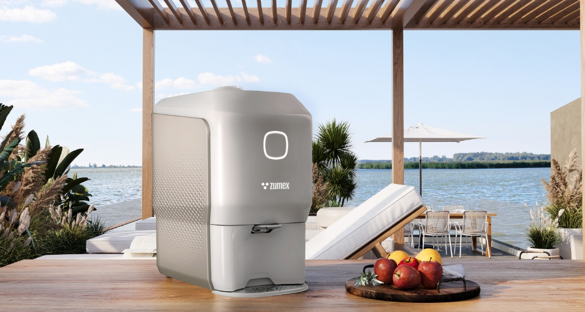
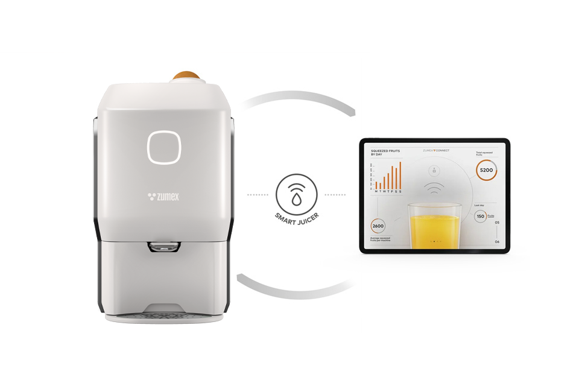
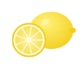
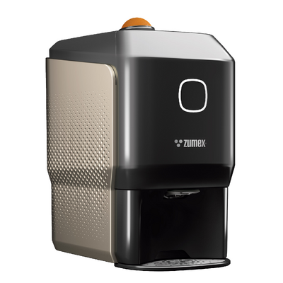
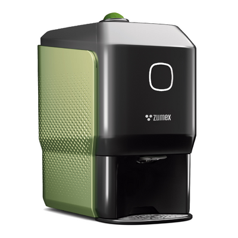

Soul Series 2
Kompaktní odšťavňovač pro kavárny, bary a hotely. Conical System® zpracovává citrusy šetrně a připojení Wi-Fi vám pomůže sledovat provoz. Pro limetky je k dispozici samostatná edice.
Cenu a dostupnost vám potvrdíme podle konfigurace.
Co Soul Series 2 umí
Soul Series 2 přináší automatické lisování citrusů i na bar, kde je každý centimetr důležitý. Se šířkou 30 cm nabízí čerstvou šťávu na objednávku v kavárně, koktejlovém baru nebo hotelu. Conical System® ovoce před rozříznutím vystředí a připraví pro lisování.
Podle zvolené sady zpracuje pomeranče, mandarinky, citrony nebo limetky. Systém PulpOut průběžně odstraňuje dužinu a semena; lisovací jednotku lze vyjmout pomocí 1Step Case Out. Wi-Fi propojení se Zumex Connect umožňuje sledovat provoz a upozornění.
Kompaktní tělo se vejde i na menší bar.
Výměnné sady pro pomeranče, mandarinky, citrony a limetky.
Chytré funkce a provozní přehled prostřednictvím Zumex Connect.


Co Soul Series 2 zpracuje
Lis Soul Series 2 je navržený pro dokonalé lisování malých a středních citrusů. Díky výměnným sadám zvládne:
 Pomeranče
Pomeranče Mandarinky
Mandarinky
Citrony Limetky
LimetkyU citronů doporučujeme odrůdy kulatého tvaru s tenkou slupkou, například Eureka, Lisbon nebo Meyer.
Varianty a provedení
Jedna řada, vaše konfigurace. Fotografie jsou ilustrační, výbava a parametry se mohou lišit podle varianty.

Soul Series 2
Vyberte sadu podle skutečné velikosti ovoce. Limes edition dodává výrobce se sadou XS. Pro provoz mimo bar lze poptat Juice Kart, dávkovač kelímků nebo bezhotovostní modul.

Soul Series 2 Limes edition
Pro limetky se sadou XS; vhodné pro bary a přípravu citrusových základů.
Rozměry
Kolik místa Soul Series 2 potřebuje.
Lis
- Výška537 mm
- Šířka300 mm
- Hloubka480 mm
- Hmotnost32 kg
Juice Kart (stolek)
- Výška939 mm
- Šířka856 mm
- Hloubka580,5 mm
Údaje výrobce. Přesné rozměry pro vaši konfiguraci rádi ověříme.
Barevná provedení
Nejautentičtější styl
- Black Smoke Grey
- Black Natural Sand
- White Smoke Grey
- White Natural Sand
- Special Edition Black Light Green
Barevné odstíny na obrazovce jsou orientační. Vzorník vám rádi ukážeme.
Technické parametry
- Výkon M/S
- 18 plodů/min
- Výkon XS
- 36 limetek/min
- Rozměry (š × h × v)
- 300 × 480 × 537 mm
- Hmotnost
- 32 kg
- Zásobník
- 3–6 pomerančů / 7–8 limetek
- Průměr ovoce M
- 64–81 mm
- Průměr ovoce S
- 45–65 mm
- Průměr ovoce XS
- 42–52 mm
- Příkon
- 100 W | 0,134 HP
- Napájení
- 100–240 V, 50–60 Hz
- Odpadní nádoba
- 7 l (12–14 pomerančů)
- Připojení
- Wi-Fi
- Typ provozu
- Střední
- Výdej
- Kohoutek Up&Down, proti odkapávání, s vysokým průtokem
- Spotřeba proudu
- 3,4 A / 1,5 A
- Hladina akustického tlaku
- Pod 60 dB
- Výška plnění
- 115 mm
- Půdorys
- 0,14 m²
Údaje výrobce pro uvedené provedení. Výkon závisí na surovině a konfiguraci. Zdroj: Zumex
Co zvážit při výběru
Vyberte sadu podle skutečné velikosti ovoce. Limes edition dodává výrobce se sadou XS. Pro provoz mimo bar lze poptat Juice Kart, dávkovač kelímků nebo bezhotovostní modul.
Technologie a výbava
Co uvnitř dělá rozdíl v chuti, hygieně i obsluze.
Conical System®
Ovoce se před řezem vystředí, takže řez je přesný a čistý a z každého plodu získáte maximum šťávy i chuti.
PulpOut System
Automaticky odstraňuje dužninu a semena.
Antibakteriální nanotechnologie ASP®
Certifikovaná hygiena. Technologie na bázi iontů stříbra účinně a dlouhodobě brání růstu bakterií.
1Step Case Out
Celou lisovací jednotku vyjmete a vyčistíte v jediném kroku.
Smart Juicer
Data o provozu v reálném čase přes Zumex Connect.
Cashless modul
Bezkontaktní platba, která sama spustí lisování. 4 způsoby platby: contactless (mobil nebo karta), čip, magnetický proužek, MIFARE.
Juice Kart
Pojízdný stolek s prostorem na až 20 kg pomerančů a integrovaným odpadem.
Dokumentace ke stažení
Prospekty, technické listy a návody výrobce.
Podobné produkty

Minex
Minex je automatický pomerančový lis pro provozy s mírnější spotřebou: malé kavárny, pekárny i hotelové snídaně.
- Výkon13 pomerančů/min
- Zásobník6–7 plodů

Essential
Essential je řada pro každodenní přípravu čerstvé citrusové šťávy v gastronomii.
- Parametry proEssential Pro
- Výkon22 plodů/min

Versatile
Versatile spojuje automatické podávání citrusů s větší autonomií než ručně doplňované stolní lisy.
- Výkon Basic / Pro22 plodů/min
- Zásobník Pro16 kg

Speed Up
Speed Up je určen pro intenzivní výdej čerstvé šťávy v obchodech, velkých bufetech a vytížených gastroprovozech.
- Výkon40 plodů/min
- Zásobník20 kg
Chcete Soul Series 2 do svého provozu?
Pošlete nám, kolik šťávy denně připravujete a kolik máte místa. Ozveme se s doporučenou konfigurací a cenou.